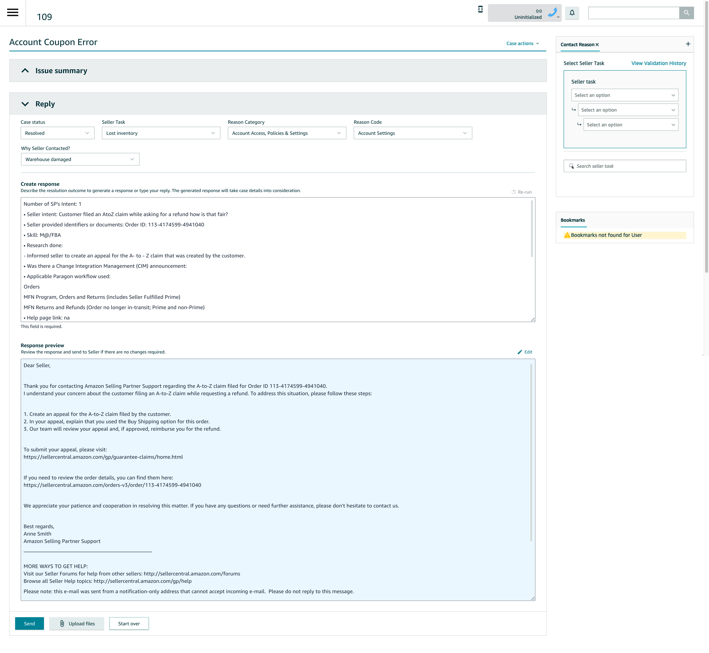

Response Generator for Seller Support Associates
Designing a scalable, multilingual LLM experience for high-volume customer support
Overview
Seller Support associates handle millions of email-based support cases every year. Writing accurate, policy-compliant, and empathetic responses—often in non-English languages—was time-consuming, inconsistent, and difficult to audit at scale.
I led UX for Response Generator, an LLM-powered authoring tool embedded directly into the associate workflow. The system helps associates draft high-quality responses using structured annotations, case context, and SOPs—while preserving human control, auditability, and trust.
The feature is now fully launched worldwide, supporting both English and non-English cases, with 60% of external responses using AI and ~30% sent with no edits after launch.
Problem
Associate pain points
- Writing responses from scratch increased Average Handle Time (AHT) and cognitive load.
- Inconsistent tone, structure, and policy adherence across regions.
- Non-English responses required translation or linguistic support.
- Auditors had no visibility into what AI generated vs. what the associate edited.
Business & system constraints
- Extremely high-volume workflows (seconds matter).
- Strict policy, quality, and compliance requirements.
- AI could not fully replace human judgment.
- Adoption had to be voluntary and measurable, not forced.
Design Goals
- Reduce drafting time without sacrificing quality or control
- Work inside existing workflows (no context switching)
- Support multilingual cases by default
- Make AI output transparent and auditable
- Enable real adoption, not dark-pattern usage
Solution
Core UX pattern: “Structured intent → Generated response”
Instead of prompting associates to “chat with AI,” the design anchors generation around how associates already work:
- Associate writes structured annotations (resolution intent, research, actions taken)
- AI generates a full seller-ready response
- Associate can edit, regenerate, bypass, or send as-is
- Auditors see the original AI output vs. final sent response
This keeps the associate firmly “in the loop.”
Key Design Decisions
1. Designing annotations, not prompts
Early versions revealed that 69% of associates were typing full emails into the input field—negating AI benefits and skewing metrics.
UX response:
- Reframed the input as “Describe the resolution outcome”
- Added inline guidance to reinforce notes vs. email mental model
- Anchored generation on structured case fields (reason codes, workflows)
2. Optional AI, not forced AI
A version that removed the AI bypass increased confusion and reduced trust—especially among specialized teams like Paid Seller Support.
UX decision: Re-introduce an explicit AI bypass, making usage intentional and measurable.
Result: cleaner adoption data and higher trust from experienced associates.
3. Multilingual by default
The system automatically detects the case’s dominant language and generates responses using Claude Sonnet 3.7’s native multilingual capabilities, covering 13 languages representing 99.5% of non-English cases.
UX considerations:
- Clear language indicators
- Safe fallback to English
- Human auditing before global dial-up
4. Audit-first AI UX
For auditors, “black box AI” was unacceptable. I partnered with auditing teams to design:
- A dedicated audit view showing the raw AI-generated response
- Visibility into whether associates edited or sent as-is
- Weekly audit workflows that fit existing QA processes
This was critical for leadership approval and global rollout.
Example Flow (From the Mocks)
- Associate enters resolution details (structured notes)
- Clicks Generate response
- Reviews AI-generated email with SOP links auto-inserted
- Edits or sends directly
- AI output + final message are logged for audit
(See response preview and audit screens in the attached mocks - Placeholder)
Impact
Quantitative
- 60% of external seller responses now use AI
- ~30% sent with no edits, indicating high trust
- AHT improvements observed (up to ~60 seconds in earlier pilots)
- Statistically significant workload reduction across regions (EU, FE, NA)
Qualitative (Associate feedback)
- “This significantly cuts the email response drafting time.”
- “I still write fast, but I use the generated phrases all the time.”
- “Amazing!!!”
What This Project Demonstrates
- Designing human-in-the-loop AI systems
- Translating LLM capabilities into real operational UX
- Balancing trust, control, and efficiency
- Iterating based on behavioral data, not assumptions
- Shipping AI at global, enterprise scale
What I’d Do Next
- Scenario-based onboarding inside the tool
- Inline quality signals before sending responses
- Cost optimization via newer LLMs (Sonnet 4.5)
- Deeper intent-aware response personalization